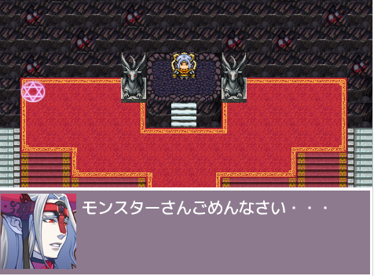

Profile
佐藤 宏樹 | satou hiroki
このサイトは日本総合ビジネス専門学校に通うエンジニアを目指している学生のポートフォーリオサイトです。
IOSアプリ開発 Webサイト Arduino 勉強している途中です
Skil
html,css,javascript,Arduino,swift……
WORK
↓

RPG>
scrarchで作ったRPG風ゲームです。

寄りポ
寄りみちポイントを通って目的地までのルートを表示します

Arduinoと傾斜スイッチで作ったデバイスです
傾きを感知するとファンが動き出しているところです